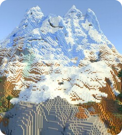

Обновление Minecraft 1.21.11 "Mounts of Mayhem" (Выпуск от 9 декабря 2025) добавило новых мобов (Верблюд-Кадавр, Пустынник, Зомби-Всадник), новое оружие (Копье), броню Наутилуса, незеритовую конную броню, а также новый тип скелета, спавнящегося в пустыне со «Слабостью» и не боящегося солнца, и панораму с этими мобами в главном меню, но без новых блоков.
Самые популярные версии
1.12.2
1.16.5

1.18.2
1.7.1
«Смерть — это лишь временно, вы всегда можете возродиться и найти свои предметы»
Самые быстрые спидранеры по майнкрафту
Самый быстрый спидранер на данный момент-lowk3y_, он поставил мировой рекорд в 6 минут 50 секунд
lowk3y_ - топ-1
drip120 - топ-2
loodlow - топ-3
NoHacsJustRoblox - топ-4
skycrab1 - топ-5
Aquacorde - топ-6
Подробное описание обновления
Обновление Minecraft 1.21.11 (Mounts of Mayhem, «Скакуны хаоса»), выпущенное 9 декабря 2025 года, принесло в игру ряд существенных нововведений и технических улучшений. В игру добавлены новые мобы: наутилус — подводный моб, которого можно приручить с помощью иглобрюха или ведра с ним, оседлать и использовать для перемещения по воде; при ношении седла он даёт игроку эффект «Дыхание наутилуса», позволяющий дышать под водой, а для его защиты существует броня, которую можно найти в подводных руинах, затонувших кораблях или кладах. Существует также разновидность — наутилус‑зомби, всегда появляющийся вместе с утопленником‑наездником, вооружённым трезубцем. В пустынях появился верблюд‑кадавр — моб‑нежить, который ночью спаунится с двумя наездниками (кадавром с копьём и пустынником); после победы над наездниками моб становится дружелюбным, его можно оседлать и лечить кроличьей лапкой. Ещё один новый моб — пустынник (барханник), вариант скелета, спаунящийся в пустыне группами по 4 моба только под открытым небом; он имеет 8 единиц здоровья, стреляет стрелами с эффектом «Слабость», перезаряжается дольше обычного скелета и не горит на солнце; при смерти может выпасть кость, стрела или стрела слабости.
В игру введено новое оружие — копьё, имеющее два вида атаки: укол (левая кнопка мыши) и удар с разбега (зажатие правой кнопки мыши с последующим разгоном), причём урон зависит от скорости разгона. У копья есть минимальная дальность использования, а также новые чары, позволяющие при ударе уколом сделать рывок — при этом расходуются насыщение и голод игрока, а также прочность оружия. Копья могут появляться у зомби, кадавров, обычных и зомби‑пиглинов.
Теперь лошади, ослы и верблюды могут носить незеритовую конскую броню, которую можно создать, улучшив алмазную броню на столе кузнеца. Кроме того, эти животные научились плавать — с ними можно переплывать реки, хотя нырять под воду с ними по‑прежнему нельзя.
Среди прочих изменений: новая текстура кожаной брони; возможность для игрока с элитрами пролетать сквозь некоторые блоки (например, пещерную лиану); изменённая группировка яиц призывания в режиме творчества; единое для всех игроков на сервере движение облаков; анимация плавного появления чанков (скорость загрузки можно настроить в разделе графики); переработанная система настроек графики (теперь они разделены на 3 раздела, а некоторые дублировавшиеся настройки убраны в раздел специальных возможностей). Также в обновлении исправлено множество ошибок и добавлено немало новых технических возможностей.
 1.12.2
1.12.2
 1.16.5
1.16.5
 1.7.1
1.7.1


.png)